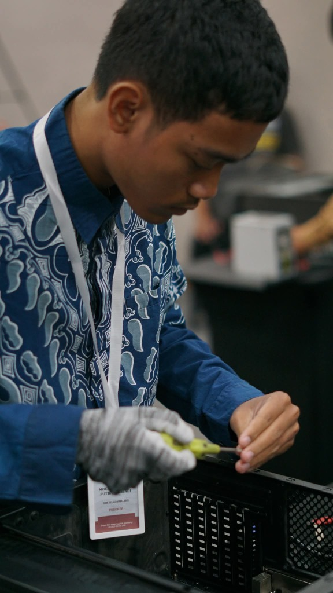

Halo, saya M. Rafli Putra P
Memiliki keunggulan praktis dalam crimping kabel UTP Cat 5e (standar T568A/B & uji tester 8 pin), penyambungan (splicing) kabel fiber optik dengan fusion splicer presisi loss rendah, serta konfigurasi IP Address statik/DHCP dan Default Gateway untuk memastikan seluruh perangkat terhubung lancar.

M. Rafli Putra P
Teknisi Jaringan & Cabling
Cat 5e
Standar Crimping T568B
< 0.03 dB
Redaman Splicing Fiber
10
Perangkat Sukses Setting IP
8 Pin OK
Verifikasi LAN Tester
Tentang Saya
Teknisi Jaringan dengan Fokus Presisi pada Pengkabelan Fisik & Konektivitas IP
Saya adalah teknisi jaringan yang berfokus pada pekerjaan fisik dan konfigurasi dasar pengalamatan jaringan komputer. Saya memiliki keahlian utama dalam crimping kabel UTP Cat 5e sesuai standar urutan warna TIA/EIA-568A dan T568B, baik untuk tipe kabel Straight-Through maupun Crossover, dengan tingkat keberhasilan tinggi yang terverifikasi menggunakan LAN tester.
Selain pengkabelan tembaga, saya terlatih dalam penyambungan (splicing) kabel fiber optik menggunakan alat fusion splicer, mulai dari teknik pengupasan core dengan stripper, pemotongan presisi menggunakan cleaver, hingga pengujian redaman sinyal dengan Optical Power Meter (OPM) dan Visual Fault Locator (VFL). Pada layer logis, saya menguasai setting IP Address statik, DHCP, subnet mask, dan default gateway agar seluruh komputer klien, printer, dan access point dapat saling berkomunikasi serta mengakses internet tanpa kendala IP conflict.
Crimping Cat 5e
Standar T568A/B, crimping presisi, dan uji 8 pin LAN tester.
Splicing Fiber Optik
Penyambungan core kaca via fusion splicer, OTB, & uji OPM.
Setting IP & Gateway
Pengaturan IP statik/DHCP, netmask, gateway, dan uji ping.
M. Rafli Putra P
Teknisi Jaringan & Cabling
Keahlian & Penguasaan Teknis
Fokus keterampilan praktis yang diasah secara mendalam dalam pengkabelan LAN, penyambungan serat optik, dan pengalamatan IP jaringan.
Crimping Kabel Cat 5e
Pengkabelan UTP & RJ45
-
Crimping Standar T568B (Straight)
-
Crimping Standar T568A (Crossover)
-
Pengujian LAN Tester (Pin 1 s.d. 8)
-
Terminasi Modular Jack & Roset LAN
Splicing Fiber Optik
Penyambungan serat optik
-
Operasional Mesin Fusion Splicer
-
Pemotongan Fiber Cleaver Presisi 90°
-
Terminasi OTB, ODP & Roset Optik
-
Pengujian OPM & Laser VFL Sinyal
Setting IP & Gateway
Pengalamatan & konektivitas
-
Setting Static IP & DHCP Client
-
Konfigurasi Default Gateway & Subnet
-
Setting DNS & Pengujian Ping
-
Setting Wireless Access Point (AP)
Portofolio Proyek & Tugas
Dokumentasi pekerjaan crimping kabel Cat 5e, penyambungan serat optik, dan konfigurasi IP gateway yang telah diimplementasikan.

Crimping & Instalasi Kabel LAN Cat 5e
Pemasangan kabel UTP Cat 5e untuk workstation komputer, pengurutan standar T568B, dan pengetesan LAN tester 8 pin.

Penyambungan Serat Optik (Fusion Splicer)
Penyambungan kabel drop core optik dengan fusion splicer, pemotongan cleaver rata, dan uji redaman OPM < 0.03 dB.

Konfigurasi IP Statik & Default Gateway
Pengaturan alamat IPv4, subnet mask /24, default gateway router, dan pengetesan ping end-to-end tanpa packet loss.

Pembuatan Patch Cord Massal Cat 5e
Produksi kabel jumper Cat 5e dengan pelindung rubber boot dan quality control uji konektivitas rapi.

Terminasi Roset Optik & Pengujian Sinyal
Pemasangan roset optik dinding, penyambungan pigtail SC/UPC, dan pengecekan daya optik memenuhi standar operasional.

Setting IP Gateway Wireless Access Point
Konfigurasi IP statik access point, pengarahan gateway, pengaturan SSID WiFi, dan eliminasi konflik DHCP lokal.
Pengalaman & Latar Belakang
Teknisi Jaringan & Cabling
AktifInstalasi Kabel LAN Cat 5e, Fiber Splicing & Setting IP
Menangani penarikan dan crimping kabel UTP Cat 5e skala lokal, pembuatan kabel patch cord presisi, penyambungan serat optik dengan mesin fusion splicer, terminasi roset/OTB, serta konfigurasi manual IP Address dan default gateway pada perangkat client dan access point.
Pendidikan Kejuruan Teknik Komputer & Jaringan (TKJ)
PendidikanSekolah Menengah Kejuruan (SMK) / Pelatihan Vokasi
Fokus pelatihan intensif: Praktik crimping kabel UTP Cat 5e standar T568A & T568B, pengujian kabel menggunakan LAN tester, praktik fusion splicing kabel fiber optik, penggunaan Optical Power Meter (OPM), serta perhitungan subnetting IPv4 dan konfigurasi default gateway.